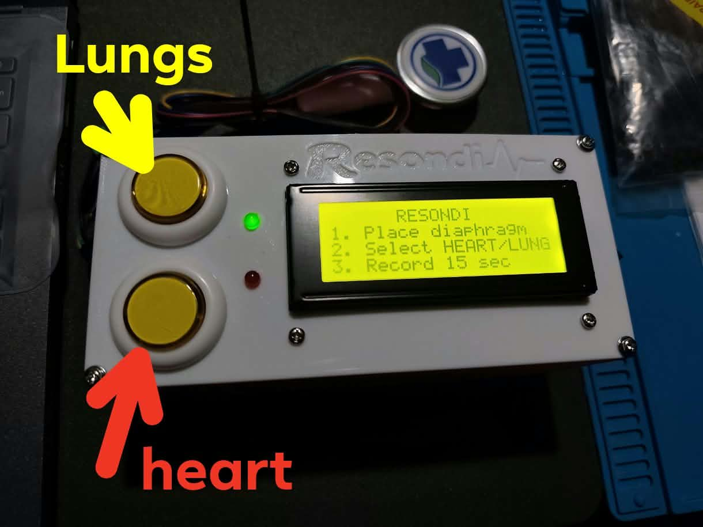
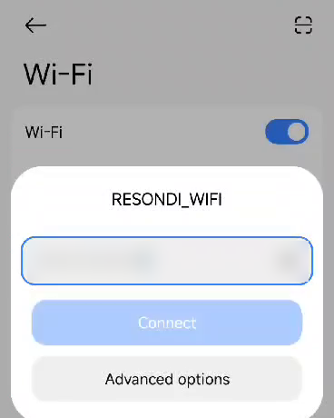
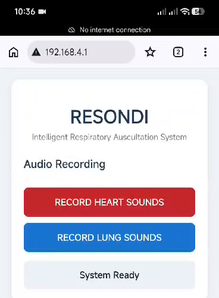
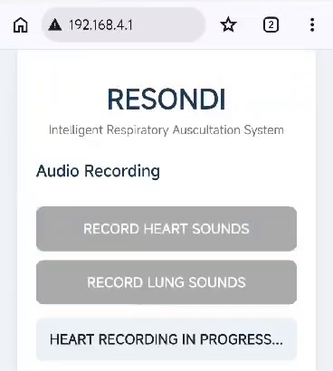
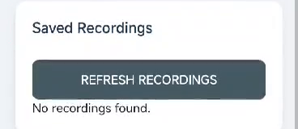

No internet and no app needed. Just the device and a phone.
Charge the device, then switch it on. The screen lights up with "RESONDI".
On your phone, connect to RESONDI_WIFI.
In Chrome, go to
192.168.4.1
Place the chest piece, press a button, and hold still for 15 seconds.
Inside: a 32 GB memory card that keeps every recording (15 s, WAV).

Tap RESONDI_WIFI, type the password, tap Connect
Go to 192.168.4.1. Look for System Ready
While recording, the buttons turn grey
Refresh to see saved recordingsThat is what lets a doctor compare today's sound with last week's.
A full exam takes about 34 minutes for the lungs, or 45 minutes or more with the heart.
For now, recordings travel on the memory card. Automatic sending is coming.
Wipe the chest piece with a 70% alcohol wipe between patients. Keep it dry and out of heat (the case is PLA plastic). Don't pull the chest piece by its cable.
| If you see… | Do this |
|---|---|
| No RESONDI_WIFI | Check the device is on. Turn your phone's Wi-Fi off and on. |
| "Obtaining IP address…" | Wait 10 seconds. Still stuck? Forget the network and join again. |
| The page won't open | Make sure you're on RESONDI_WIFI. Turn mobile data off. Type 192.168.4.1 exactly. |
| "No recordings found" | Tap Refresh Recordings. Check the memory card is pushed in. |
| Sound is muffled or noisy | Bare skin, press firmly, quieter room, no talking. |
| Buttons are grey | It's still recording. Wait for System Ready. |